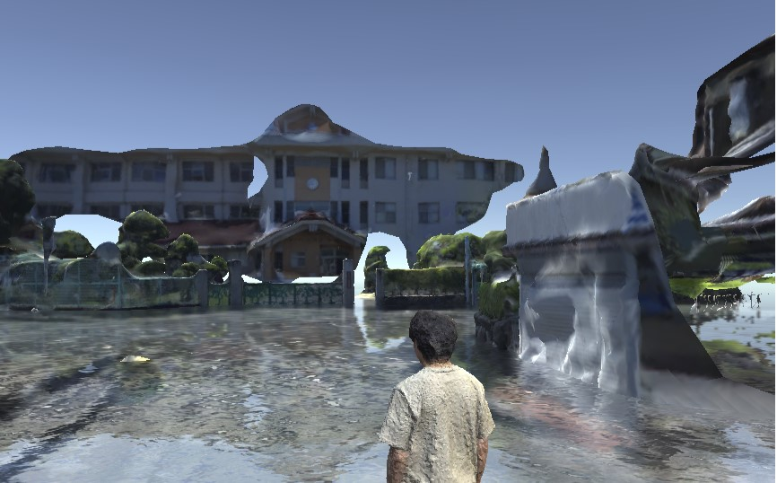
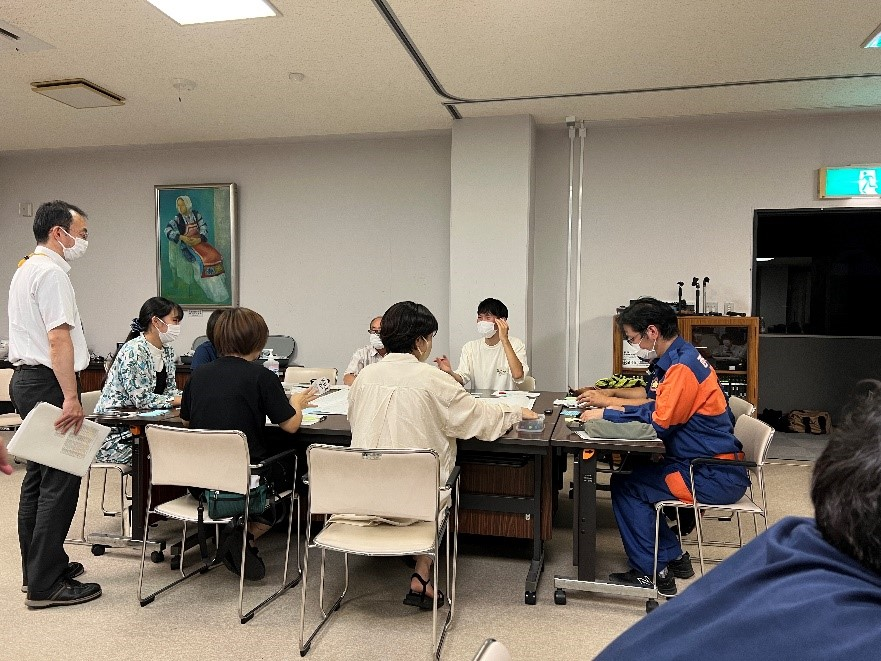
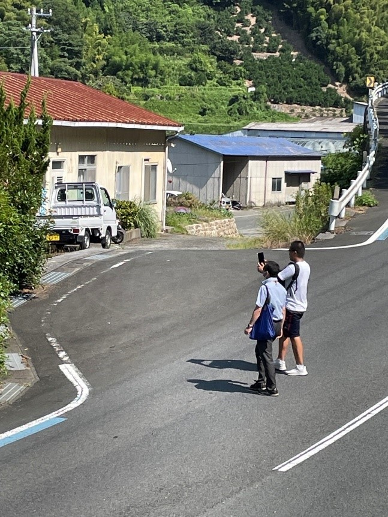

mizukan
イベント
西予市三瓶地区のVR災害体験ツールの作成進捗
地域の人が見ればどこかわかるような地区の3Dモデルを
作成し,浸水の災害体験ができるものを作成しています．

実際に作成している三瓶小学校付近の3Dモデルと浸水

ワークショップにも参加し，地域住民の考える避難経路を歩いたり
撮影したりして、地域の方との交流を持ちながら進めております．

実際の撮影している様子
より良いコンテンツとなるよう、がんばります!(^^)!
文責 和田